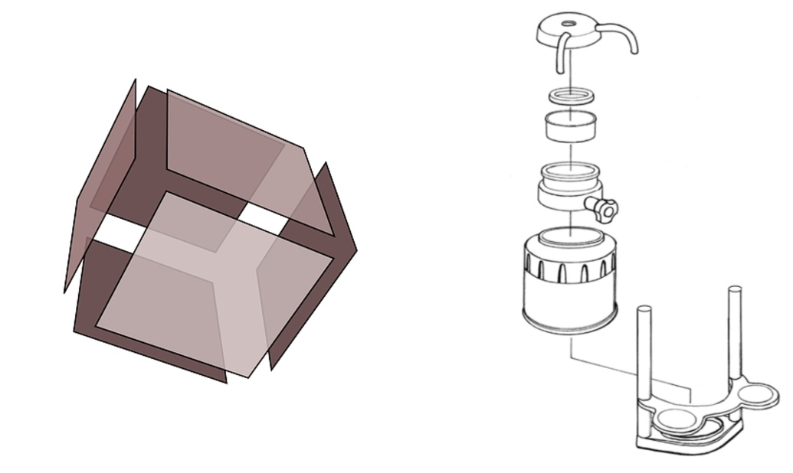

Hello!
First, I'm glad you enjoyed the presentation and you want to spread this stuff around. I taught maths for a while and I believe that this is great mathematics teaching material - it is applicable and it is beautiful!
It also builds off the intuitive connection regarding the information conveyed by the "shaking" demonstration. Here's a slide I like to show kids after showing them that:  If these two groups of six pieces had magnets attached to them like the virus pieces did, and they were shaken around in bags, which would assemble first? The kids can all guess that the cube will assemble first. This is a valuable connection to make - crystals and symmetrical protein structures like insulin assemble into patterned shapes for the same reason! i.e. this is a deep insight into how things behave at the atomic level.
Here is a stand-alone version of the interactive parts. [if there's nothing linked here, tweet me @hamish_todd] Sorry if it runs slowly on your hardware!
Maybe you want to have all your students play with the things themselves. Good luck to anyone who does - may the heavens smile on the computers or tablets that you supply the kids with. And let me know, I might be able to make a more convenient version for you.
If you want to integrate the virus assembly shaking toy into a lesson, to be honest, you're in for a world of pain. You should probably just show this crappy video. If you're really keen, this is the website I got it on. They're almost always sold out though. I had to pay import duty on it, which they refunded when I emailed them, but urgh. I actually recommend getting two of the things and putting excess pieces in your shaking receptacle to be sure that the shaking will cause the thing to assemble in a reasonable length of time. (Toy producers: gap in the market alert!!!)
Making geometrical shapes out of origami is very fun and educational - though I'm afraid you need to be aware that it is time-consuming. Small geometric shapes (cubes, tetrahedra, octahedra) are not too bad, but even the simplest origami virus model is moderately intricate, so you won't be able to get a student to make one in a lesson. However - making an origami virus or two is a good fit for a classroom full of kids (age 7-11).
To do this though, it is very important that you understand the origami connection really really well yourself, because you may well get challenging questions. Here is a lecture in which I go through the connection in more detail:
Note it leaves out the HIV folding algorithm thing. As it says at 7:17 timestamp, I recommend is making that virus, ("Feline Panleukopenia virus" - one of the viruses that cats need to get vaccinated against!), out of "sonobe units". These are extremely simple to fold, here are the instructions:

If you have not done this kind of origami before, to clarify your understanding, make a few of these yourself, say six, and put them toggether into some shape, say a cube. Congratulations on your first piece of "modular origami"!
Teach the kids to make that unit, maybe have them decorate theirs (but only on the side that has a cross on it!). It takes 30 units to make Feline Panleukopenia virus. You will be the one to assemble it. When made of A4 it is an impressive sight!
The first thing to say is that viruses are very small, so for some viruses we know their shape (in the jargon: "the structure has been solved"), and for others we don't. For example, if you want to do a lesson on hepatitis E, at the time I am writing this, there are no pictures for you! But most of the famous viruses are well-studied, so there are probably resources out there for you.
If you're interested in a particular virus that I didn't mention, it will fit into one of the four families I talk about. In descending order of likelihood, it could be football-ish like hepatitis, blobby like Measles, Islamic art-ish like Zika, or irregular like HIV. There is one family that I basically left out, because it's not *particularly* interesting in this context: "helical" viruses. Ebola and Rabies are helical. Here's a great illustration of ebola, and this is a building that is structured like a helical virus.
If you google image search the name of the virus followed by "capsid", with a bit of luck, the "structure" will have been "solved" and you will get pictures of it. You can make super customized images or show your virus to students in 3D too if you want, and this can be worthwhile because lots of the images you will find will not suit your purposes! But *you will need to be a person who is experienced at downloading and working your way through whatever software you need to accomplish something*. To do this I recommend Chimera.
Yes! I recommend explorableexplanations.com.
There are also some video games I would like to recommend. The craft of video game design is being refined, and the days of "chocolate covered broccoli" educational games is coming to an end.
Incredipede, Miegakure, Dragonbox: Elements, and Bond Breaker are especially great. People bang on about Minecraft too of course, which is a good game, but we can demand better things than Minecraft!